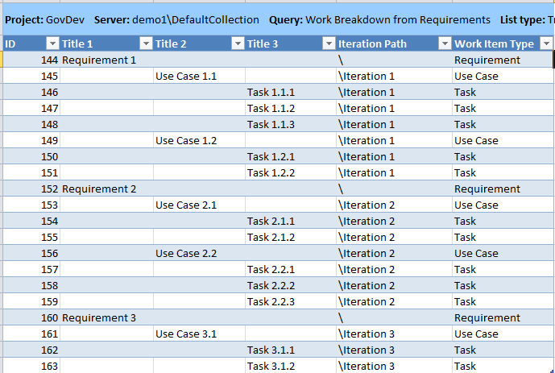

After you analyze your customer requirements sufficiently to understand what the product should do, you must work out a plan to implement the product. Or, for an existing product, you must work out what functionality is missing and work out a plan for making the changes. But the requirements do not automatically tell you the plan.
This topic outlines a method of obtaining a plan, starting from a set of requirements. This is just one method among a variety that will work on Visual Studio, and you should adapt it so that it suits your needs.
In this topic
 Requirements
Requirements
-
Customer requirements are determined by discussion with the prospective users and other stakeholders.
-
To help analyze these requirements, you will typically create storyboards and models, and you decompose the requirements into smaller use cases, forming a tree. You can link modeling elements such as use cases and activities to requirement work items.
-
There are two kinds of customer requirements:
-
Functional requirements which represent sequences of interactions between the users and product, in pursuit of specific goals. An example use case might have the title "User buys a book."
-
Quality of Service requirements include performance, security, usability, and other criteria.
-
-
You can represent these requirements as work items of type Requirement. These requirement work items should be linked to use cases and in turn tasks and system tests so that you can ensure that all the requirements are developed and tested.
-
Use the Open Requirements, Requirements Delivevered and WorkBreakdown from Requirements queries to list these requirements and related work items.
-
Use the Requirements Progress and Requirements Traceability reports to monitor which requirements have been satisfied.
For more information, see Developing Requirements and Use Cases, Team Queries (GovDev), Requirements Progress Report (GovDev), and Requirements Traceability Report (GovDev).
Use Case Decomposition
To help you arrange the requirements into iterations it becomes necessary to decompose the requirements into smaller steps or use cases describing the steps.
Storyboards often help with this activity. A storyboard is a sequence of pictures that illustrate the scenario. UML activity diagrams are useful for showing alternative paths, and UML sequence diagrams can help you discuss interactions between several actors. After you use these tools to analyze a scenario, you can enter the decomposed scenarios into Team Explorer. This lets you link test cases to the scenarios and thereby ensure that the requirements have been satisfied. For more information, see UML Activity Diagrams: Guidelines and UML Sequence Diagrams: Guidelines.
In this example walkthrough, you enter a set of customer requirements in the form of a small tree of use cases. To make it clear which work item is a requirement and which is a use case, we will use the moniker Requirement # for a requirement work item and Use Case # for a use case work item.
To open the requirements tree in Excel or Project
-
In Team Explorer, open a GovDev for TFS 2010 v1.0 project.
-
Expand Work Items, expand Team Queries, expand Project Management, and run Work Breakdown from Requirements. by opening it up in Microsoft Excel (Tree).
-
If the Iteration Path and Requirements Type columns do not appear, click Column Options, and add them to the display list.
You might also want to add the Area Path column.
-
In Office Excel, if the column headed Title 1 is not followed by columns that are headed Title 2 and Title 3, click the Team tab, and then click Add Tree Level to create the additional columns.
You can now conveniently enter the requirements as a batch.
To enter the requirements and use cases
-
In the row immediately after the bottom row of existing work items (if any), enter the title of the top-level requirement in the Title 1 column:
Requirement 1
Requirement 2
Requirement 3
-
In the Work Item Type column of all the new rows, set the type to Requirement.
-
By default, all Requirement Type values are set to Functional. If you want to change this value to one of the other type options, then you will need to add the Requirements Type
field to the MS Excel or MS Project view. -
In discussion with the business stakeholders, you determine the principal steps that make up the top-level requirement.
In the rows that immediately follow the top-level requirement, you will enter in the use cases as child work items of the requirements by first selecting the requirment and then clicking on Add Child in MS Excel. Then enter in the Title 2 column:
Use Case 1.1
Use Case 1.2
Use Case 2.1
Use Case 2.2
-
In the Work Item Type column of all the new rows, set the type to Use Case.
-
To publish the requirements and use case to Team Foundation Server, select any cell in the table of work items, and then click Publish on the Team tab.
In a real situation, you might start by entering one level of requirments and then decomposing each requirement into smaller use cases in separate operations.
You now have a tree of customer requirements, which you can edit further in Office Excel or Team Explorer.
Assign
Use Cases to Iterations
Assign the use cases to iterations by setting the iteration path field. You can do this in the Office Excel view.
In the following example, the most essential scenarios are implemented in iterations 1 and 2, and other functions are added in later iterations.
-
Iteration 1
-
Use Case 1.1
-
Use Case 1.2 -
-
-
Iteration 2
-
Use Case 2.1
-
Use Case 2.2 -
-
You can take thsi a step further an define the tasks for each use case as the following picture illustrates.

Product
planning
Before the start of every iteration, hold a meeting to review the product plan. The first product planning meeting creates the plan, and subsequent meetings review it based on earlier iterations. For more information, see Planning the Project (GovDev).
In a product plan review, discuss the features with business stakeholders, and be prepared to reprioritize them and arrange them into different iterations. The meeting should include business stakeholders and representatives of the development team.
The meeting discusses the sequence in which features will be developed. This can be done by projecting or screen-sharing the Office Excel view of the Open Requirements and Use Case Planning queries and ordering the features by iteration.
Product planning considers the priorities and the development costs. Priorities come from the business stakeholders, with some guidance about risk from the developers. Cost estimates come from the developers. To get an accurate idea of the costs, the development team must have already done some work on the architecture of the product and might need some experience from the early iterations. For this reason, the cost estimates should be refined at every product plan review.
Iteration planning
After the product plan review, plan the iteration. The product plan determines the features that will be delivered by the end of the iteration. The iteration plan determines what work the team will do to implement and test the features.
The following activities are part of iteration planning:
-
Create tasks for development and testing, and link them as children to the use cases to be implemented in the iteration.
-
Create test cases for the aspects of the use casess that are to be developed in each iteration. The test cases should be linked to the use cases so that you can monitor how complete they are.
For more information, see Planning an Iteration (GovDev).